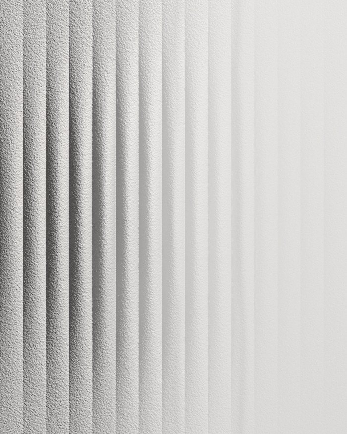
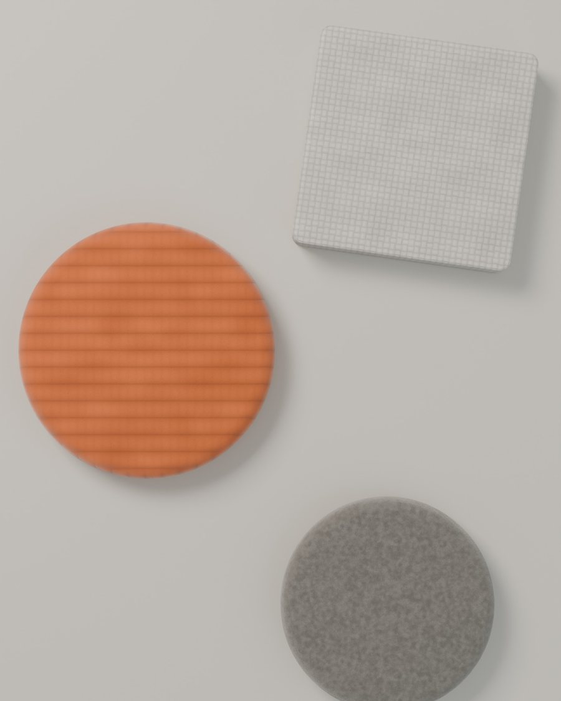
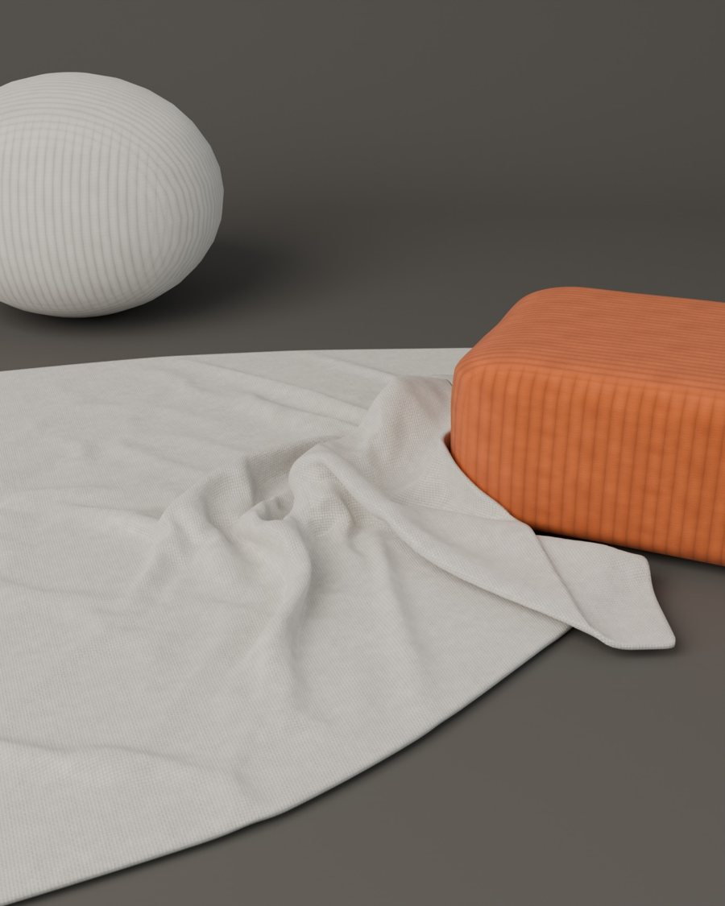
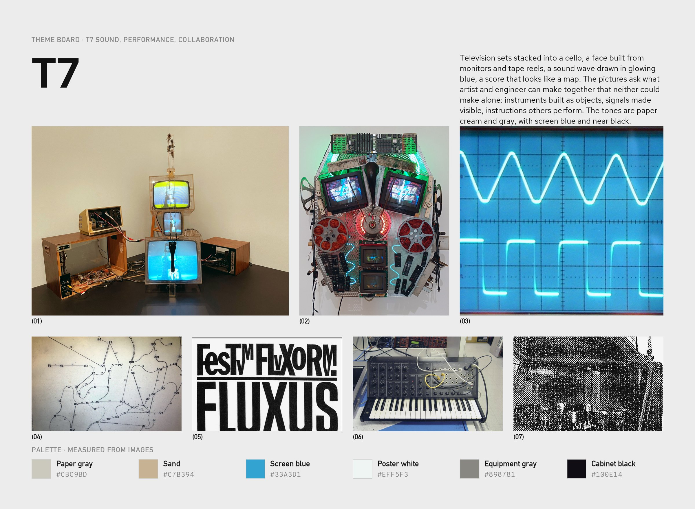

Happening
Barely felt, now seen.



Overall mood
Television sets stacked into a cello, a face built from monitors and tape reels, a sound wave drawn in glowing blue, a score that looks like a map. The pictures ask what an artist and an engineer can make together that neither could make alone: instruments built as objects, signals made visible, instructions that others perform. The tones are paper cream and gray, with screen blue and near black. Light comes from screens, and the subjects are machines, wires and printed scores.


Definition and test
The log has one linked entry: "The misfits 30 years of fluxus", and a reminder list names Billy Kluver.
- Test
- Could one discipline have made it alone? Evidence of: collaboration.
- Reading for images
- A photograph cannot show who worked with whom. It can show the marks of a joint making: hardware an artist could not wire alone, a signal path an engineer made legible, a score that gives the work to others to perform.
Motifs
| # | Motif | Theory sentence it comes from | Images |
|---|---|---|---|
| 02 | The signal made visible: a wave, a patch cable, a path for sound | "Sound" in the theme title; designer-engineer model (summary) | (03), (06) |
| 03 | The score as the work: notation and program as instruction for others | "Fluxus ... as a model" (theory summary); the performance in the title | (04), (05) |
Weak motifs. 03 is the weakest: (04) is a photo of a score, shot at an angle with glare, and (05) is a poster, so both show text and notation, not performance. Performance itself, a body in action, has no image: the open-access pictures found show faces, and the phone intake has none. Motif 02 leans on (06), a Korg synthesizer of a later decade, not a work from these groups; it shows the idea (routing a signal by hand) and not the history.
Against (what T7 opposes)
Framework wording: a look is now cheap to produce without the making behind it; T7 asks for the joint making.
Counter-case
Image (07), Leon Theremin with his instrument in a press halftone of the 1920s, marked as a counter-case (the builder cannot mark it on the page). It shows one inventor and one machine, made inside one discipline. This is an interpretation: the theremin was later played by artists and composers, and a photograph cannot show who contributed what. The image is a coarse halftone at low resolution (630 px wide after cropping) and reads as noise at small size: a defect I could not fix.
Color direction
No. The test concerns who made a thing, not how it looks. The palette below is measured from the seven images and describes this board only; it is not a proposal for the color library. Screen blue comes from a test instrument and a television, not from a theme color.